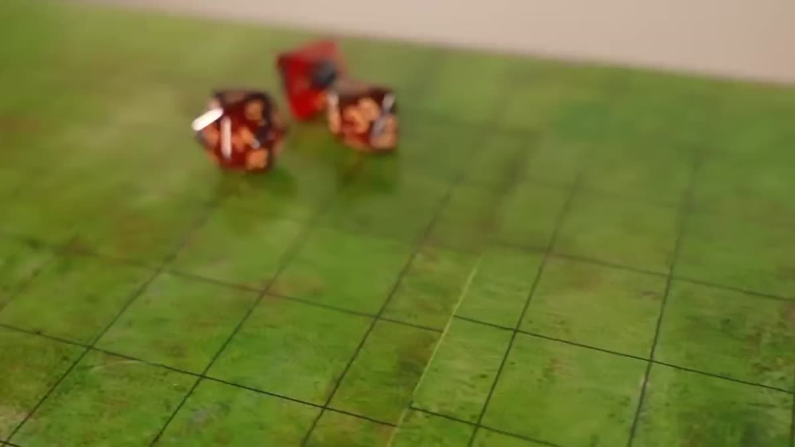
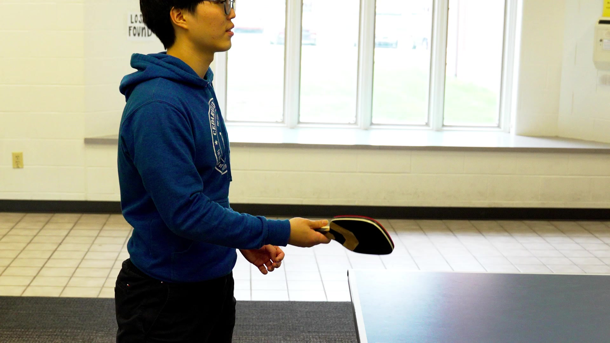
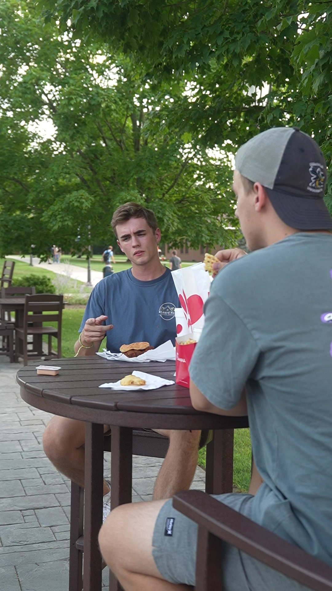

ZACHARY RUMLEY / VIDEO PRODUCTION
Impacting Lives
One Video at a Time
I am an aspiring professional whose goal is to create content that taps into the emotions of viewers and ultimately inspires them.
↓Every frame
has a purpose.
I want to create content that moves the audience personally by using a combination of the story and the music to encourage and motivate them.

EXPLORE FILM ↗Bunions and
Dragons
The idea behind this video was one hundred percent humor. The goal is to make the viewer laugh the whole time
VIEW PROJECT ↗
EXPLORE FILM ↗Ping Pong
Promo
I wanted people to see that the org was fun and competitive, and I wanted them to consider joining once they watched.
VIEW PROJECT ↗Chick-fil-A
Sauce
I wanted the viewers to enjoy watching the video, laugh at the comedy of it, and also buy more Chick-fil-A sauce.
VIEW PROJECT ↗
EXPLORE FILM ↗02 / THE PERSON BEHIND THE CAMERA
More than
the work.
About me
I am a talented college student who is excited to work in an industry where I can make a difference every day. No matter what I do, I approach it looking for the best way I can complete it. I seek to do the best I can in whatever industry I end up in because, first and foremost, I am a follower of Jesus.
What drives me
I care about these things because of the way media, mainly movies, have connected with me on a deep level. I have personally experienced the power of a well-told story and the powerful emotion it creates. I want to use what skills and talents God has given me to showcase His love to others through media.
My creative direction
I want to create content that moves the audience personally by using a combination of the story and the music to encourage and motivate them.
03 / GET IN TOUCH